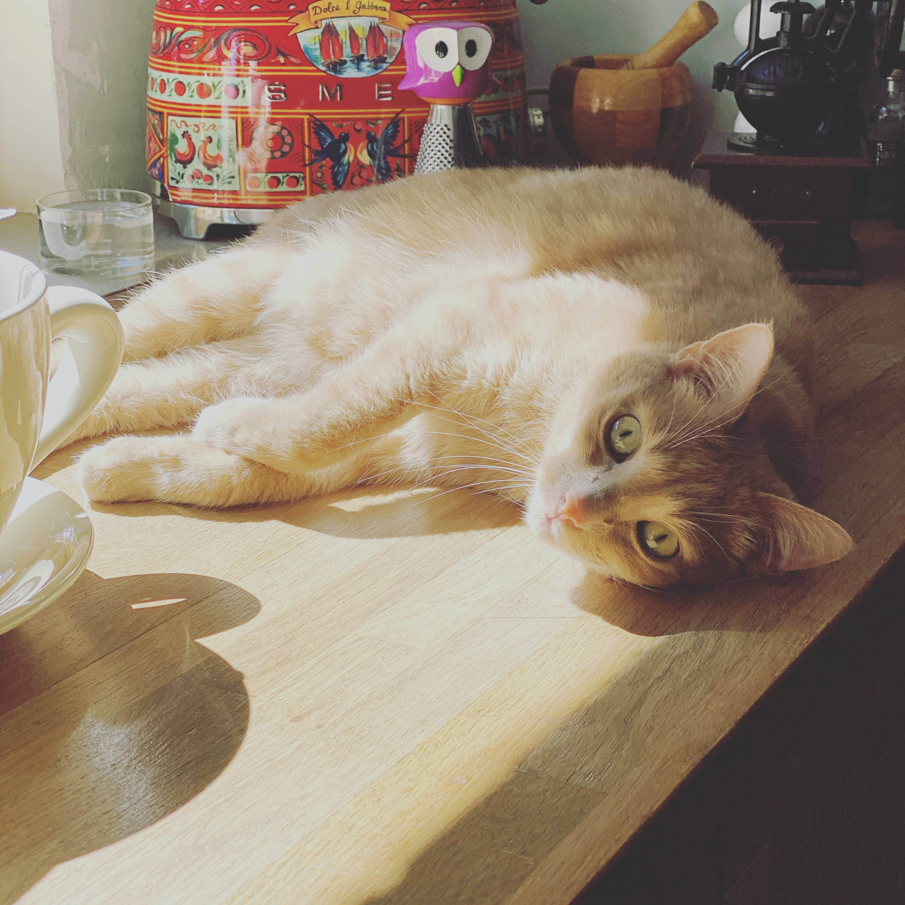

All of our food is prepared by our team of trained kitchen staff from the sealed glass kitchen where you can see your food being made, without risk of little paws getting involved. The cafe is kept at the highest standard of hygiene and cleanliness, which is proven from our Food Standard rating of 5 - something the kitties are very proud of!